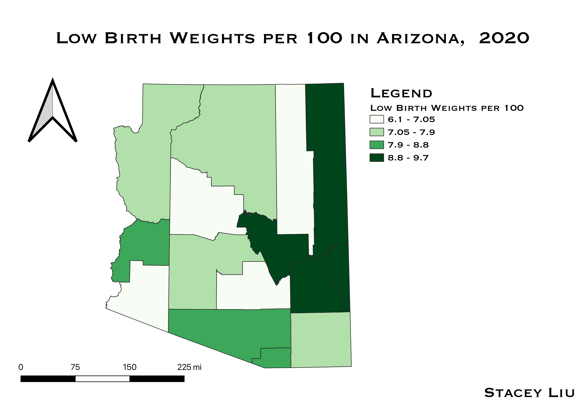

Homework 7
Stacey Liu
Map
The map shown below illustrates the number of low birthweights per 100 births in each county of Arizona in 2020. I was inspired to use birthweights because it was a significant topic in a recent unit of the anthropology course that I am currently taking. I wanted to see what disparities, if there were any, occurred in rates of low birthweights across Arizona. I considered using the raw numbers of low birthweights, but ultimately decided that using low birthweights per 100 would provide a more statistically accurate picture.

Data
Cleaned CSV dataset
CSV Source: Arizona Department of Health Services, Table 2
Vector File
Extras
Map 7 Tiles